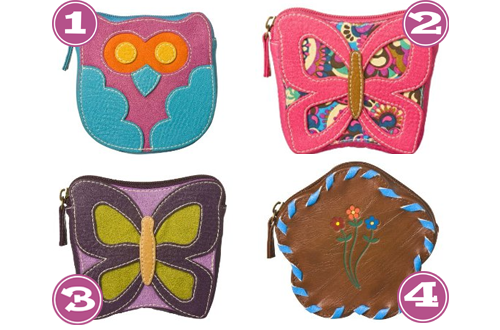

There are some adorably delish little change purses over at Target. I can’t help but think of what a fabulous (and cheap) gifts these would be for a co-worker or buddy for the upcoming holidays. Check out the cuteness:

- Target, Mossimo Owl Coin Purse
- Target, Mossimo Butterfly Coin Purse
- Target, Mossimo Butterfly Coin Purse-Purple
- Target, Mossimo Flower Coin Purse


Recent Comments